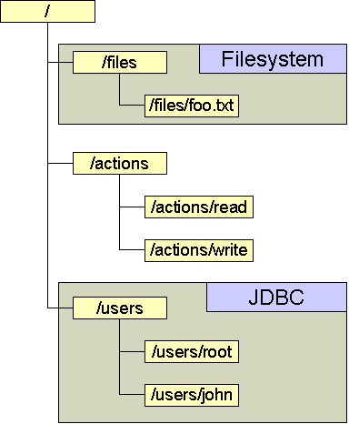

In Slide, it is possible to define low-level services to control how
objects are stored, locked, ... This is because different kinds of
objects might need very different execution implementation, depending
how they are accessed, what they represent and so on.
Two different kinds of services exist :
- Descriptors store, which are responsible for storing structure,
locks, metadata, ...
- Content store, which is only responsible for storing the content
A distinction has been made, because it's easy to see that while some
repositories are very efficient at managing and indexing small amounts of
data (relational databases are a good example of this), others are best for
storing big chunks of data (filesystem, ...).
Within Slide, every object can possibly have a different kind of
backing low-level service. For example, some objects might be stored
in a remote LDAP directory, while others could be stored in an local
SQL database. Thus, the content of a namespace can be distributed
across several different descriptors/content store.
It is up to the administrator to choose how objects will be stored using
the Slide configuration file, which maps low-level services to
individual nodes in the namespace.
Services are attributed to nodes in the namespace. This mapping is
automatically inherited by sub-nodes. Here is an example of how one
namespace might be mapped into different services:
Namespace mapping onto different Low-Level Services

In this example, there are three different service mappings.
All actions are stored together, possibly in a memory store,
all files are stored in a specific store (here, the filesystem).
The /users are mapped into a SQL database.